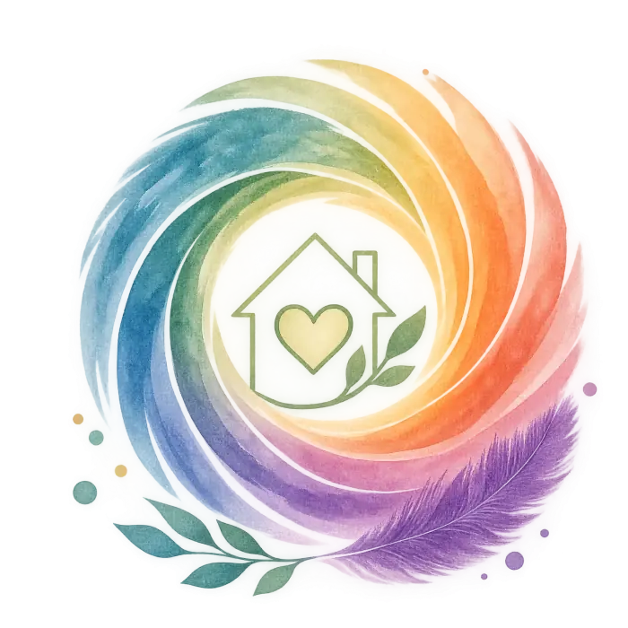

à domicile
à domicile
« Stimuler aujourd’hui pour préserver demain »
Léa GuerinetRéférente autonomie à domicile
Un accompagnement sur mesure, chez vous, pour les personnes âgées ou fragilisées et pour leurs proches, adapté à l’histoire, aux besoins et au rythme de chacun.
Mon approche
Le maintien à domicile ne consiste pas seulement à répondre à des besoins pratiques. Il s’agit aussi de préserver les capacités, les repères, les liens sociaux et la qualité de vie de la personne accompagnée.
J’interviens comme une personne ressource auprès de votre proche et de vous-même, avec un accompagnement sur mesure, adapté à son histoire, à ses besoins et à son rythme.
Mes prestations
Accompagnement cognitif personnalisé
Des activités adaptées qui sollicitent les capacités cognitives tout en préservant le plaisir et l’estime de soi.
Stimulation cognitive, en atelier ou dans la vie quotidienne
- Travail de la mémoire
- Évocation de mots et langage
- Repères dans le temps et dans l’espace
- Attention et raisonnement
- Souvenirs et histoire de vie
Maintien des repères et de la communication
J’aide la personne à garder sa place dans les échanges du quotidien, à continuer d’exprimer ses besoins et à préserver le lien avec son entourage.
Soutien et relais aux aidants
Prendre soin d’un proche peut être éprouvant. Il est essentiel que les aidants puissent, eux aussi, préserver leur équilibre.
Temps de répit
Pendant deux ou trois heures, j’accompagne votre proche à domicile avec des activités stimulantes et sécurisantes. Vous pouvez vous absenter en toute sérénité.
Accompagnement des aidants
Je vous aide à mieux comprendre les difficultés de votre proche et je vous donne des conseils concrets pour faciliter la communication au quotidien.
Accompagnement à la vie sociale
Parce que l’autonomie se maintient aussi par l’activité et par les relations avec les autres.
Sorties accompagnées
- Promenades
- Marché
- Activités culturelles
- Rendez-vous de proximité
Ces sorties deviennent de vrais supports de stimulation : observer, échanger, se repérer dans son environnement, faire revenir des souvenirs.
Conseil et coordination du maintien à domicile
J’accompagne les familles dans l’organisation du maintien à domicile et dans la coordination des différents intervenants auprès de leur proche. Selon la situation :
- l’évaluation de la situation à domicile ;
- l’identification des besoins ;
- l’aide à l’organisation des interventions ;
- le lien avec les professionnels de santé et les services d’aide à domicile ;
- l’accompagnement dans les démarches liées au parcours de la personne.
Ce qui fait la différence
La même personne, à chaque fois
C’est toujours moi qui interviens. Votre proche garde ses repères et une relation de confiance se construit.
Des séances préparées pour lui ou pour elle
Chaque intervention est pensée selon son histoire, ses centres d’intérêt et ses capacités du moment.
Toute la famille accompagnée
J’accompagne la personne aidée comme son entourage, pour un suivi cohérent et rassurant pour tous.
Pour qui ?
Mon accompagnement s’adresse à tous, et en particulier :
- aux personnes âgées qui entrent dans la dépendance ;
- aux personnes en souffrance psychique qui ont besoin de soutien au quotidien ;
- à leurs proches aidants.
Comment ça se passe
-
Vous me contactez
Par téléphone, sur WhatsApp ou avec le formulaire de cette page. Vous m’expliquez la situation en quelques mots.
-
Je viens chez vous
Tout commence par une visite à domicile, pour comprendre la situation, les besoins et les habitudes de votre proche.
-
Nous construisons l’accompagnement ensemble
Je vous propose un accompagnement sur mesure, pensé avec vous et avec votre proche.

Mon engagement
Apporter aux personnes fragilisées et à leurs proches un accompagnement humain, personnalisé et coordonné, pour préserver l’autonomie, soutenir les aidants et favoriser le maintien à domicile dans les meilleures conditions.
Me contacter
Vous pouvez m’appeler, m’écrire sur WhatsApp ou m’envoyer un message avec ce formulaire.
- 06 33 38 10 34Par téléphone
- Écrire sur WhatsAppAu même numéro
- lea@ellesadomicile.frPar email